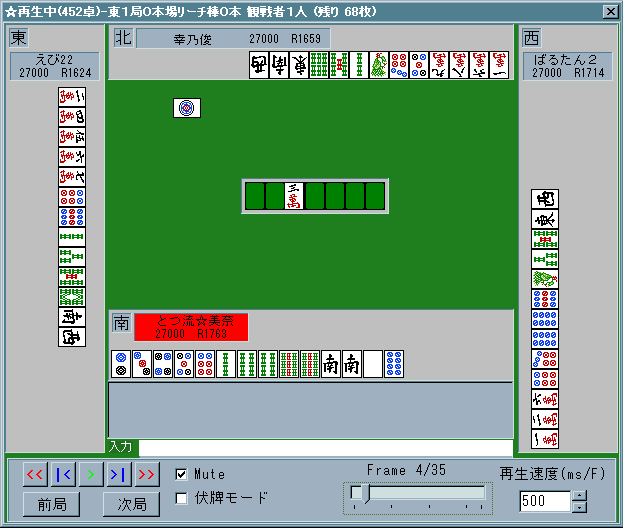

月に祈る天使で打ち方を変えて以来、ようやくRがあがりだし
R１９００＆最上卓が見えてきたので、ちょとかねてよりお待たせの
ラグに関する読みの論文をまとめますね。(´ｰ`)y-~
何気なく使ってるラグだけど私が思うには
レベルが高くなるほどみんなうまく使いこなしています。
そして自分よりヘタな雀士と打つ時はより使えるかと思います。
(少なくとも私が下ランで打ってた１００戦からそう感じました。)
さて、それではラグについてまとめていきましょう。
１．面子作りに関して
これは以前説明した通りですね。
詳しくはラグに関する読み１をご覧になればよろしいかと思います。
改めてここでは触れません。
例：１３４５６ｐでラグオフの時、上家の２ｐにポンラグ→１ｐ切り
例：２３３４ｓでラグオフの時、上家の４ｓにポンラグ→３ｓ切り(ソーズの下で２面子作らない)
２．フリテンを見破る
これも以前説明した通りです。
ですが第１東風において見る機会は上級卓へ行けばいくほど頻度が下がると思われます。
むしろ単位局あたりの得点期待値重視である第２東風の方が見る機会は多いと思います。
ですが覚えておいて損はないですね＾＾ 思いっきり全つっぱして下さい。(笑)(^-^*)♪
リーチ者の上家が切った牌にラグが掛かった時、ポンがありえなければロンである。
ｃｆ．下家リーチに対して現物の２ｗがあるのでトイツ落とししたらラグが掛かった。
この時点で２ｗ”ポン””ロン”はありえないのでフリテン確定である。
３．降りる時、回す時
これ、ラグとして一番使う頻度が高く、最重要項目です。
１と３で使う頻度が全体の８割強を占めると思われます。
このラグの使い方こそ実戦と東風でもっとも違うところであり
あなたの「あんぱいを抱えて手を狭める」「リーチに対して切る牌がない」
といった悩みを一番解決してくれることでしょう。
これは３だけでなく全てに言えますが、特に使うのは”ポンラグ”です！
少なくともみ〜なは１局の中でポンラグした牌は全部覚えています。
手出しツモ切りなんかを見るよりもとても大事なことです。
では例を見てみましょう。
先制した後に親が３本積んで迎えた東２局です。
私としても流したいので中を２鳴きしたところ
下家からリーチが掛かりました。

私の手は見ての通り、せいぜい２０００。
場にドラも見えてない７５００差の３着目のリーチなのでここは「降り」です。
(俺は全つっぱするぞ！って人はとつ麻雀講座初心者編を読んでくださいね(＃´Д｀))
さて、当然７ｐから切っていくわけですがここでリーチ宣言牌の７ｗにラグが掛かりました。
”リーチされた順目は鳴きなしが消える”わけですが７ｗはチーできないので
ポンラグになりますね？
ということはここで”７ｗは他家が２枚持っている”ということになるので
８ｗ９ｗ（９ｗは全員の現物ですが）はワンチャンスになってグッと通りやすくなるわけです☆
結局こんなリーチでした。
親が３ｓを一発で振り込み、この試合はトップを取れましたが
この３-６ｓ待ちを一点で読む必要は全くありません。
「ポンラグから安全牌を見つけて通りやすい牌を打つ」ことが一番大切です。
ご覧の通り
「ポンラグした牌の外側の牌は極めて安全」なので是非覚えておいて下さい。
降りる時にずいぶんと変わってくるはずです。
同時に序盤からのポンラグした牌は全て覚えておきましょう＾＾
リーチが掛かった時にずいぶんと楽になるはずです。
４．特殊役の可能性を考える
さて、ずいぶんラグに関して慣れてきたとは思いますが
こんな経験はないですか？
「２枚目のファン牌に対してラグが掛かったにもかかわらず誰も仕掛けない」
こういう場合はファン牌を頭にしている可能性ももちろんありますが
序盤であるならばトイツ落としで断ヤオ平和狙い、それ以外なら
チートイツや国士などの特殊役が濃厚です。（ってかそれ以外ないです 笑)
具体例を見てみましょう。
下ランでのこんな局面です。
ドラの中が切りきれず、中単騎の仮テンへ持っていこうとしてたその時です
対面のドヘタくんが平気でツモ切りました(死)
ポンラグが掛かり・・・ポン！ かと思いきや・・・あれれっ？？
ポンの声が掛かりませんでした。
「ドラである中をポンしない」のはチートイツ狙いか国士狙いか
どちらかしかありませんね？
さらに下家は６ｗをカンしています。
とすると中をトイツで持っているのは上家しかありませんね！
”上家がツモ切りしたのを確認して”私は中を切り、様子を見ることにしました。
チートイドラドラへは振りたくないですね(笑)
そして局を進めていって・・・流局したらこんな形↓でした。
９ｓはカンドラ表示牌なので純カラ。白単騎ではありますが
もし９ｓをつもっても白は現物なので当然９ｓ単騎に受けることができました。
チートイや国士は何かと事故がつきもの・・・
ですがポンラグひとつで時として事故すら回避することだってできるわけですね♪
こんなのには振りたくないですしね。(笑)
「２枚目のファン牌がラグったにも関わらず鳴かない」
なら特殊役を疑ってみましょう。
ドラの所存や国士の可能性を考えることは未然に事故を防ぐ上でとても大事です。
そして自分がチットイや国士を狙う時はラグは切っておきましょう。
５．ラグの駆け引き
最後になりましたが
実際に局を進める上でラグオフにする時、ラグオンにする時を考えてみましょう。
とりあえずここでは”み〜なならこうする”という形で話を進めて行きます。
こっちのほうがいいぞ！って意見があったら是非是非教えて下さいね。
α．ラグオフにする時
み〜な、基本はラグオフです。
何故なら「相手のラグに集中できる」のと「上家の捨て牌のラグはポンラグに限定できる」
からです。
特に後者は大事で自分のチーラグを消すことによって
より多くのポンラグを感じることができるので
当然面子作りや安全牌探しにプラスになるからです。
中張牌に全くラグがかからずにその下家がリーチしてきたら
まずタンピン系と思って間違いないでしょう。
鳴く必要性が無い時はなるべくラグオフにしましょう。
あともう１つ・・・こんな状況の時。↓

東１局、配牌を取るとこんな感じ。
あなたはどんな最終形をイメージしますか？
比較的面子が整ってて自風と９ｓ、４ｓあたりのシャンポンにできそうですね。
ドラがないので南を叩いてしまうと１０００にしかなりません。
ならばここは・・・ラグオフです。
しばらくしてこうなりました。↓
２ｓを切ってリーチです！
ラグは切っているので直前の親が切った南にはラグは掛かりません。
つまり自風がトイツであることは自分にしかわからないわけです。
とすると・・・あれれ？？(笑)↓
はい対面のマヌケくんが一発で出してくれました。(爆)
５０符３はんの一発和了です。(￣ー￣)
よく見て下さい。
自風である南にラグを掛けていたならば極端な話、対面から見ると
５０％くらいの確率でロンされてしまうわけです。
（ファン牌がラグった直後のリーチには絶対にその牌を切ってはいけません！
５０％くらいの確率でロンされてしまいます！ 当然ですね。)
ですがあらかじめシャンテン数の低い整った配牌ならば
最初からラグオフにすることによりこのように一発を取ってしまうこともできるわけです！
是非使って見て下さい！
注：仮に２枚目のファン牌を切られてポンできなくなったからといって慌てることはありません。
南をアンパイとして使ってもいいし、じっくりと手作りしていってもいいのです。
β．ラグオンにする時
これは比較的簡単ですね。
とりあえず「鳴きたい時」(笑) 当然ラグオンです。
あと、「配牌が比較的悪い時にファン牌のドラである時」
み〜なはラグオンにします。
敢えて上家の打牌にラグを掛けまくることによって
自分にドラがあるように見せることができるからです。
これを逆手に取ればファン牌のドラをトイツで持ってる人を探知することも
ある程度は可能になります。 トイツ持ちの人は当然ラグオンにしてるからです。
配牌がいい時は上がれる可能性も高いのである程度は自由に打ってもいいかと思います。
ラグのブラフという点では有効ですね！
あと、鳴いた後。
鳴いてテンパったからといってラグをオフにしてしまうと
特に染め手などではテンパったことが他家にバレてしまいます。
鳴いた時は降りにくくなるし、ラグはつけっぱなしでいいかと思われます。
ベタオリする時。
この時も大抵み〜なはラグオンです。
思考時間が増えるのは結構メリットがでかい・・・(^^ゞ
７秒ラグらせてる間に次は何切るか、必死で考えます(笑)
最後に仮テンへ向かう時(笑)
当然ラグオンにしましょう。
み〜なはこれをよく忘れます(^^ゞ
第１では流局テンパイ料も大事です♪
と、以上のようにまとめてきましたが
何分、ラグに関してはまだまだ使い道があるかもしれません。
今研究中なのは
「北家のチーラグを覚えることにより親に通りそうな牌を考える」
のを実験中です。
北家が５ｗ切ったあとに親がリーチ！
５ｗにラグがあったかなかったかでずいぶんと安全度が違います。
ですが変則待ちには対応できず、難航しています。(爆)
ラグを常につけている親に５ｗノーラグなので５ｗ切ったら
５６６６ｗという形に一発で振ってしまいました(^^ゞ(爆)
東風で打つ上でラグは東風だけにしかないもの・・・
ラグを制すると打牌にもずいぶんと幅ができてくるはずです！
み〜なもこれから先、またあたらしいラグの使い方があれば改めて筆をとりますね☆ヾ(^-^*)♪